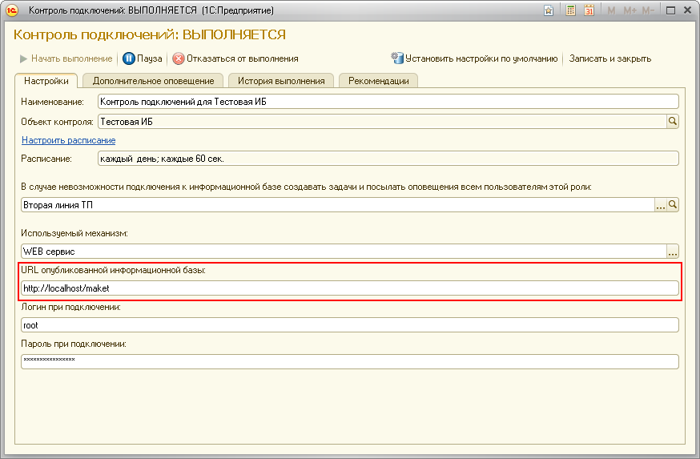
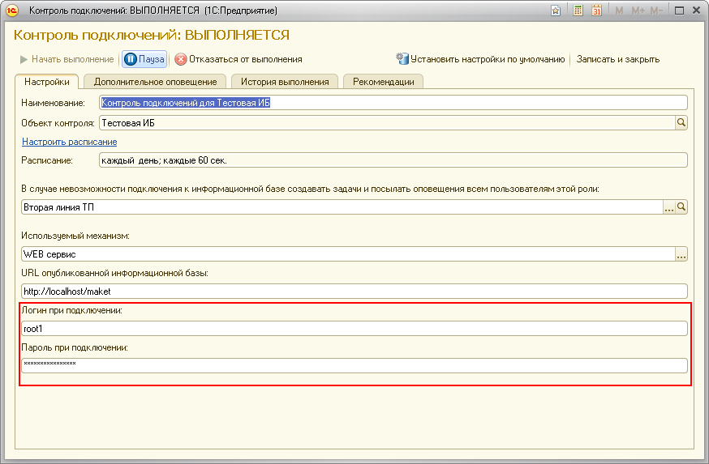
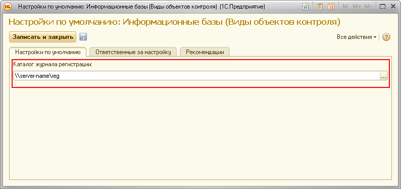
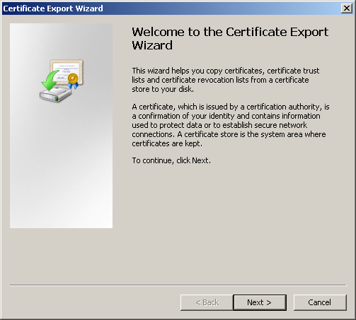
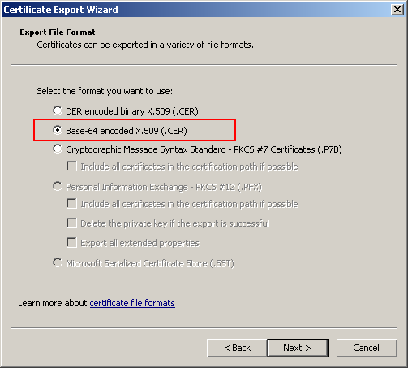

ЦКК не удалось подключиться к контролируемой информационной базе.
Чтобы понять, что привело к критической ситуации вам следует обратиться к содержимому поля "Дополнительные данные по задаче".
Возможные варианты содержимого поля "Дополнительные данные по задаче":





После этого нужно открыть полученный файл, скопировать его содержимое и вставить в начала файла cacert.pem, который лежит в папке bin, каталога установки программы 1C:Предприятие.
На центральных серверах кластеров, на которых запущен ЦКК и контролируемая информационная база зарегистрированы разные версии COM-соединителя. Требуется синхронизация версий COM-соединителей.
Кластер, на котором работает контролируемая информационная база, не поднят или недоступен по локальной сети.
В кластере, на котором запущена контролируемая информационная база, используется версия 1С:Предприятия, отличная от той, что используется в кластере ЦКК.